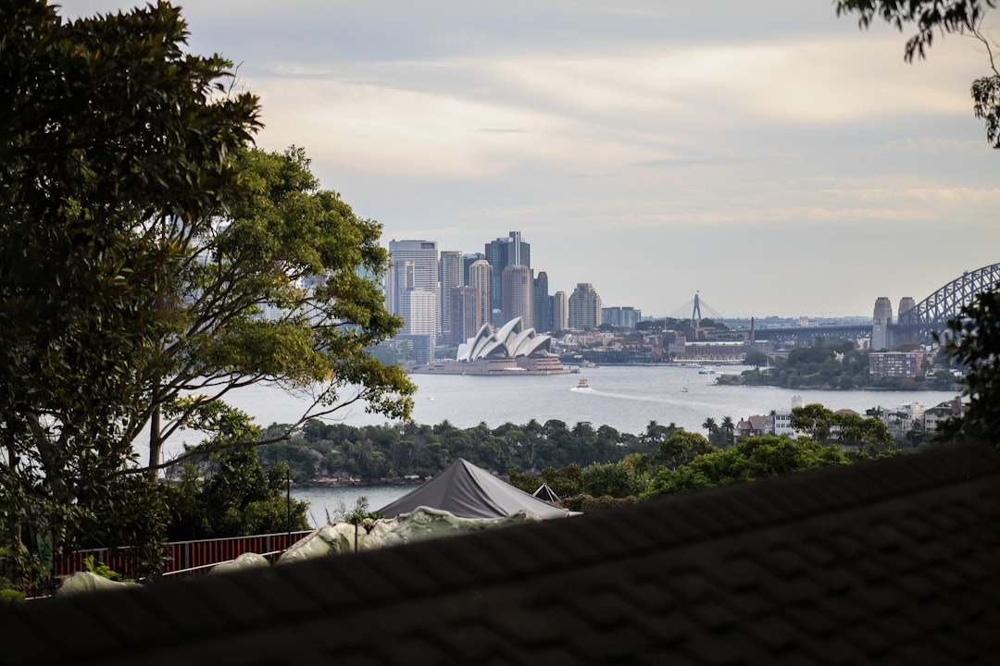

Sydney renovation planning starts with scope, not styling. The published guide separates whole-home, kitchen, bathroom, extension, granny flat, heritage and terrace work, with approvals, structure, access and finish quality considered before pricing. It says a full whole-home renovation with structural change commonly starts around $150,000 and can reach several hundred thousand, while smaller cosmetic work may sit in the tens of thousands. Bathroom waterproofing must comply with AS 3740.
For homeowners comparing home renovations sydney options, the useful first move is to define the project type, known constraints, likely approvals and the budget range before requesting builder quotes.
Home Renovations Sydney Explained
Renovation Sydney frames early planning around the type of project before the builder visit: whole-home work, kitchen change, bathroom work, extension, granny flat, heritage or terrace renovation. That is a practical order because the finish list only makes sense once layout change, structure, access and approvals are understood.
The source guide is careful about different Sydney home types. A Paddington terrace under a conservation overlay is not the same job as a Castle Hill second-storey addition or a Cronulla beachside kitchen. Harbourside homes, beachside units, project homes and apartments each raise different questions about access, scope and approval pathway.
- Write down what feels broken: layout, storage, waterproofing, ageing services, access, or finish quality.
- Separate cosmetic work from structural change, because pricing and approvals can move quickly once walls, services or the building envelope are affected.
- Note suburb, property type and any known heritage, strata or access constraint before asking for a quote.
Cost ranges need a written scope before they mean much
The published cost guidance gives broad signals rather than fixed promises. A cosmetic refresh of a few rooms can sit in the tens of thousands. A whole-home renovation with structural work commonly starts around $150,000 and can run into the several hundred thousands. The guide also says materials are usually the largest single cost, with labour a significant share on top.
For kitchen work, the lower-cost path is usually a refresh with new doors, benchtop and splashback where the layout stays put. A fuller kitchen with new cabinetry, benchtops, appliances and services updates sits higher, and premium custom joinery, a butler's pantry and integrated appliances increase the scope again.
Readers comparing a second perspective can use this related Sydney home renovation planning guide alongside the source page, then ask each quoting builder to identify inclusions, exclusions, programme, assumptions and any approval items in writing.
Kitchen, bathroom and whole-home choices change the quote conversation
A kitchen brief should not begin with benchtop colour alone. The source page points to poor flow, tired cabinetry and appliance layouts that no longer suit the home. That means a useful kitchen enquiry names whether the layout stays, whether plumbing or electrical work moves, and whether custom joinery is part of the expectation.
Bathroom work has a different pressure point. The guide states that cost is driven by size, tiling extent, whether the layout moves and fixture quality. It also names waterproofing to Australian Standard AS 3740 as a non-negotiable part of a compliant bathroom, so waterproofing should be a line item discussed before finishes are chosen.
Whole-home work needs a wider lens. Layout reconfiguration, modern services and finishes interact with approvals, access and structure. A builder-led review should confirm whether the job is really one large project, a staged renovation, or a smaller targeted upgrade with fewer approval and disruption questions.
Who this applies to
This guide is most useful for Sydney homeowners who are early enough to shape the brief, but close enough to need a builder conversation. It suits owners weighing a full renovation, a kitchen or bathroom upgrade, a ground floor extension, a first floor addition, terrace work or an apartment renovation where access, strata, structure or approval issues may change the pathway.
It is less useful for a reader who only wants final design inspiration. The recurring decision is whether the home needs better function, more space, compliant wet areas, modern services, custom joinery, or a clearer approval path. Once that is named, quotes can be compared against the same brief rather than against different assumptions.
- First question: is the problem layout, condition, compliance, storage, access or finish level?
- Second question: will any wall, service, wet area, roofline or external form change?
- Third question: what information must be resolved before a fixed-price quote is fair?
Approval and builder checks to make before committing
The source page says builder credentials, insurance details and written scope should be clear before work starts. It also says the quoting contractor should set out scope, price, programme and exclusions in writing. Those documents give the homeowner a way to compare quotes and spot where one price is lower because an assumption has been left out.
Approval details belong near the start of the conversation. Council pathways, waterproofing and structural work are named as early considerations in the source material. For terraces, apartments, harbourside homes and beachside units, the practical issue is not simply location. It is whether the property type changes access, approvals, waterproofing, structural detailing or sequencing.
A tight enquiry does not need architectural language. It needs suburb, property type, rough scope, known constraints, likely structural change and a budget range. From there, the next step can be a quote, cost review, approval conversation or a tighter rethink of the scope.
- Define the project type. Choose the closest path, such as whole-home, kitchen, bathroom, extension, granny flat, heritage or terrace work.
- List constraints. Record property type, suburb, access issues, known heritage or strata questions and any expected structural change.
- Separate scope from finishes. Decide what must change functionally before choosing premium or budget finishes.
- Ask for written assumptions. Request scope, price, programme and exclusions in writing before comparing quotes.
| Scenario | What usually needs clarifying | Question to ask before pricing |
|---|---|---|
| Cosmetic room refresh | Finish level, cabinetry, surfaces and whether services stay put | Can this be priced without moving plumbing, electrical or walls? |
| Full kitchen renovation | Cabinetry, appliances, benchtops, services updates and joinery expectations | Which inclusions and exclusions change the quote most? |
| Bathroom renovation | Size, tiling extent, layout movement, fixtures and waterproofing | How is AS 3740 waterproofing documented in the scope? |
| Whole-home or extension | Structure, approvals, access, programme and staged delivery | What must be resolved before a written fixed-price quote is reliable? |
Common questions
How much should I budget for a Sydney renovation? The source guide says a cosmetic refresh of a few rooms can sit in the tens of thousands, while a full whole-home renovation with structural change commonly starts around $150,000 and can reach several hundred thousand. A written quote for the specific home is the reliable figure.
What changes kitchen renovation pricing most? The guide points to cabinetry material, benchtop choice and the amount of plumbing and electrical work. Keeping the layout is usually a simpler brief than rebuilding the kitchen around new services and custom joinery.
Why is bathroom waterproofing called out separately? The source page states that waterproofing to Australian Standard AS 3740 is a non-negotiable part of any compliant bathroom. It should be included in the written scope rather than treated as a vague allowance.
When should approval questions be raised? Approval details should be raised early, especially where structural work, council pathways, heritage, terraces, apartments or unusual access may affect the renovation path. The guide recommends clarifying those issues before pricing.
This guide covers early Sydney renovation planning, scope choices, cost signals, approval questions and written quote checks.